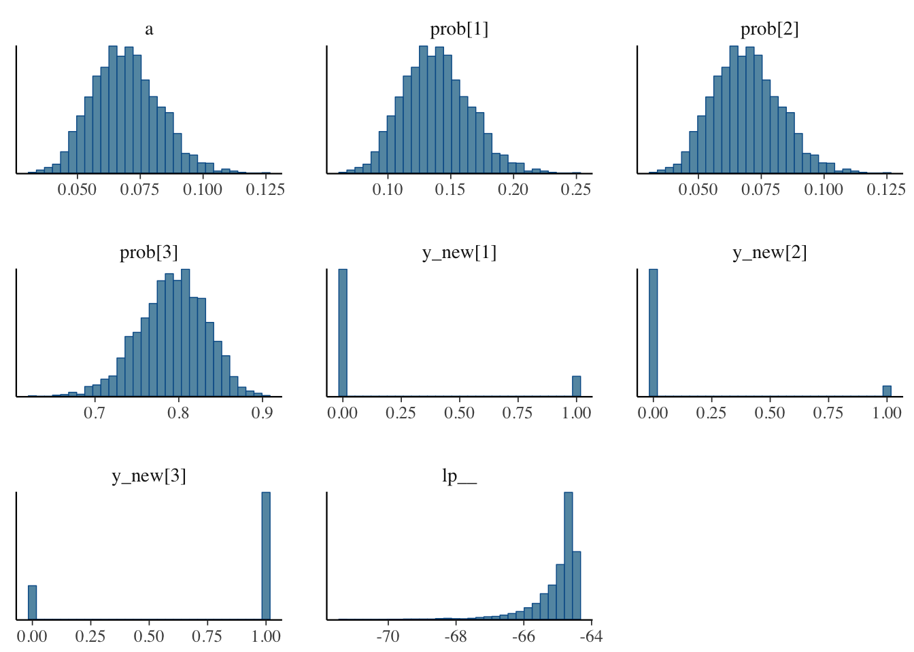
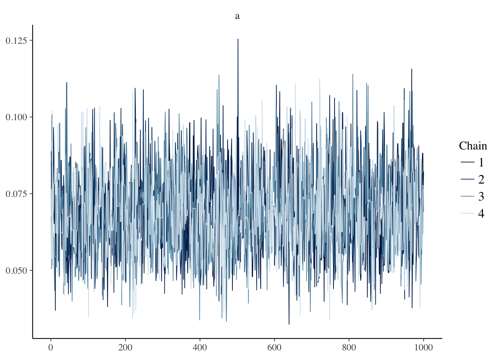
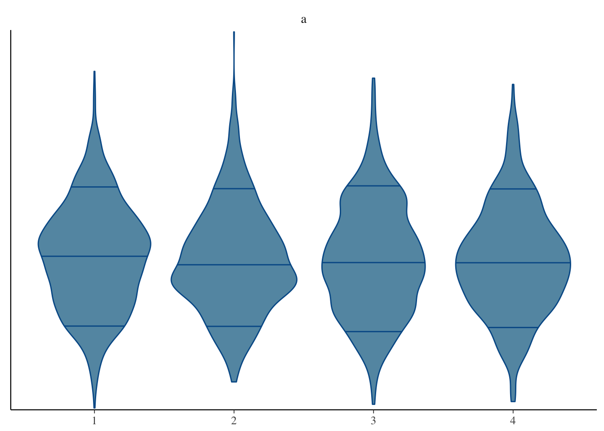
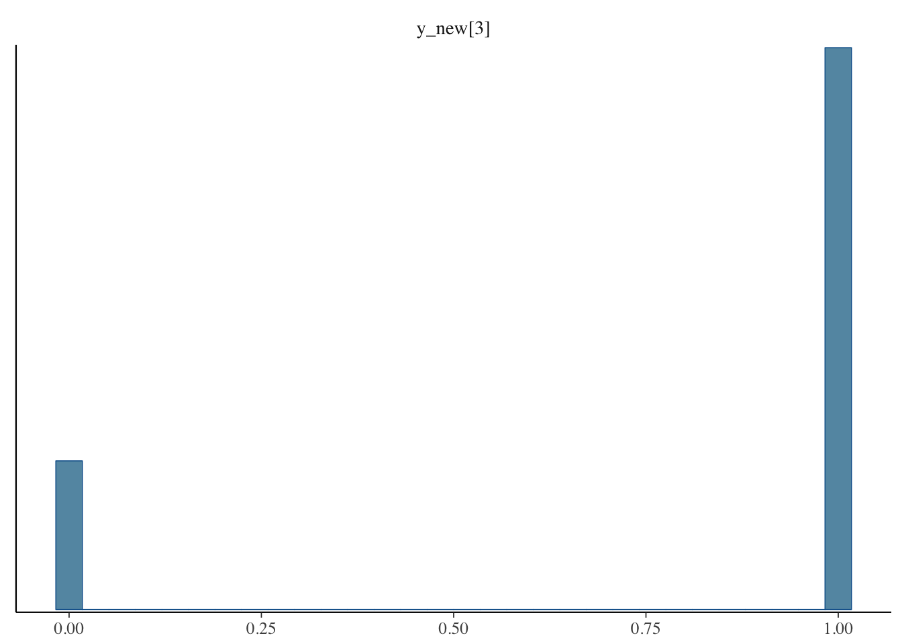

14 Мультиномиальное распределение
Конспект: Молдованов Александр, Умрихин Александр
Дата: 08.02.2017
Можно почитать о мультиномиальном распределении на википедии
14.1 Задание 1
Дано: Вы решили сходить в лес 100 раз. Вероятность встретить там волка составляет 0,3, Бабу-Ягу - 0,1, а Хариса - 0,6.
Пусть \[ \begin{pmatrix} х_{1} \\ х_{2} \\ х_{3} \end{pmatrix} , \] где \(х_{1}\) - количество раз, когда вы встретили волка, \(х_{2}\) - Бабу-Ягу, \(х_{3}\) - Хариса.
Этот вектор имеет мультиномиальное распределение с параметрами (n=100, p(0,3; 0,1; 0,6)), т. е. \[ \begin{pmatrix} х_{1} \\ х_{2} \\ х_{3} \end{pmatrix} \sim multi (n=100, p(0,3; 0,1; 0,6)) \] Вопрос: Какова вероятность встретить волка 10 раз, Бабу-Ягу - 20, а Хариса - 70? p(\(х_{1}\)=10, \(х_{2}\)=20, \(х_{3}\)=70)-?
Решение: \[ \left. \begin{array} [c]{ll}0,3^{10} - \text{вероятность встретить 10 волков}\\ 0,1^{20} - \text{вероятность встретить 20 раз Бабу-Ягу}\\ 0,6^{70} - \text{вероятность встретить 70 раз заблудившегося Хариса} \end{array} \right\} => \] вероятность встретить их всех за 100 раз = \(0,3^{10}\times0,1^{20}\times0,6^{70}\)
Важен коэффициент перед этим всем: !!!!!! обосновать !!!!!
\(C^{10}_{100} \times C^{20}_{90}\) = \(\frac{100!}{10!\times90!} \times \frac{90!}{20!\times70!} = \frac{100!}{10!\times20!\times70!}\)\
Ответ: \(\frac{100!}{10!\times20!\times70!}\times0,3^{10}\times0,1^{20}\times0,6^{70}\)
14.2 Задание 2
Дано: \[ p = \begin{pmatrix} p_{1} \\ p_{2} \\ p_{3} \end{pmatrix} , \] \[ x = \begin{pmatrix} x_{1} \\ x_{2} \\ x_{3} \end{pmatrix} \sim mult(n, (p_{1}, p_{2}, p_{3})) \]
Вопрос: \(E(X), Var(X)\) - ?
Решение: \[ E(X)=\begin{pmatrix} np_{1} \\ np_{2} \\ np_{3} \end{pmatrix} \] \[\begin{multline} Cov(x_{1}; x_{2}) = Cov(I_{1,1} + I_{1,2} + ... + I_{1,100}; I_{2,1} + I_{2,2} + ... + I_{2, 100})=\\ = \sum\ Cov(I_{1,i}; I_{2,i}) = nCov(I_{1,1};I_{2,1})=n(E(I_{1,1}I_{2,1})-E(I_{1,1})E(I_{2,1}))=-np_{1}p_{2} \Rightarrow\\ Var(X)=\begin{pmatrix} np_{1}(1 - p_{1}) & -np_{1}p_{2} & -np_{1}p_{3} \\ -np_{1}p_{2} & np_{2}(1 - p_{2}) & -np_{2}p_{3}\\ -np_{1}p_{3} & -np_{2}p_{3} & np_{2}(1 - p_{2}) \end{pmatrix} = n\Bigg(\begin{pmatrix} p_{1} & 0 & 0 \\ 0 & p_{2} & 0\\ 0 & 0 & p_{3} \end{pmatrix}-pp^{T}\Bigg) \end{multline}\]14.3 Определение симплекса (n-мерного)
Опять же можно почитать на википедии
\(\Delta^n = \{x | x_1 , ..., x_n \geq 0 , x_1 + ... + x_n =1 \}\)

Рисунок для n = 3
14.4 Переходим в STAN
Для Байевского подхода нужна модель, которая описывает данные:
\[ \begin{pmatrix} х_{1} \\ х_{2} \\ х_{3} \end{pmatrix} \sim multi (n=100, p(0,3; 0,1; 0,6))\]
Давайте уточним вводные данные:
Мы были в гостях у бабушки. Она нам сказала, что волки водятся в лесу также часто, как и Баб-Яжки.
Следовательно у вероятность встретить волка равна \(\alpha\), Бабу-Ягу тоже \(\alpha\), а Хариса: \(1-2\alpha\)
Зададим априорное распределение на \(\alpha\):
\(\alpha\sim U[0,0.5]\), где \(U\) - равномерное распределение
Следовательно, наша задача сводится к тому, чтобы получить апостериорное распределение \(\alpha\): f(\(\alpha\)(x))
library(rstan)
library(bayesplot)
data <- list(y = c(15, 5, 80))
model <- stan_model(file = 'multinomial.stan')
fit <- sampling(model, data = data, seed = 42)
fit
fit_array <- as.array(fit)
mcmc_hist(fit_array)
mcmc_trace(fit_array, pars = 'a')
mcmc_violin(fit_array, pars = 'a')
mcmc_hist(fit_array, pars = 'y_new[3]')
fit_array[ , 2, 1]